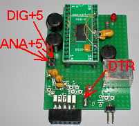
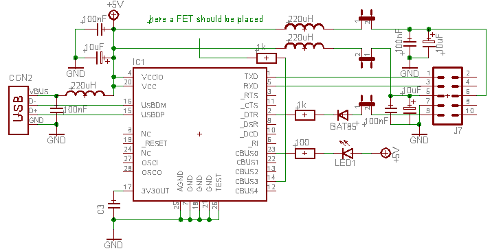
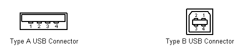
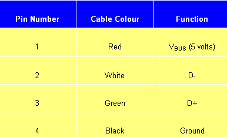

september 2006
RPD USB-Slave (FT232R)
This module was mainly build to evaluate the FT232R USB slave chip. But it can also be used as an alternative serial interface to the RPD or as an additional serial interface on the RPD.
To use it as the main serial interface of the RPD,
- remove the jumpers from the normal serial interface
- connect this device to J7
- place jumpers on both the analog and digital power
- place a jumper on the DTR-reset
MProg 2.9C (can program also the special features of the FT232RL



